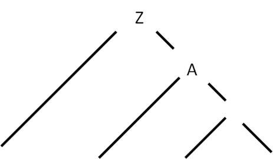
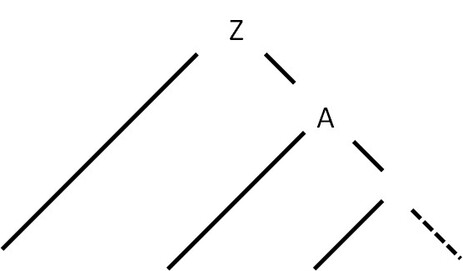

Диагностика и нейтрализация синтаксических ошибок
Необходимо применить метод Айронса для нейтрализации синтаксических ошибок.
Метод Айронса
Метод Айронса - это алгоритм синтаксического анализа, основанный на графе автоматной грамматики.
- При обнаружении ошибки во входной цепочке в процессе разбора, входная цепочка выглядит как Tt, где T – следующий символ во входном потоке (ошибочный символ), t – оставшаяся во входном потоке цепочка символов после T. Алгоритм нейтрализации включает следующие шаги:
- Определение недостроенных кустов дерева разбора.
- Формирование множества L – множества остаточных символов недостроенных кустов дерева разбора.
- Удаление следующего символа из входной цепочки до тех пор, пока цепочка не примет вид Tt, такой, что U => T, где U ∈ L, то есть пока следующий символ T в цепочке не будет выведен из какого-либо из остаточных символов недостроенных кустов.
- Определение, какой из недостроенных кустов стал причиной появления символа U в множестве L.
Метод Айронса для автоматной грамматики
Синтаксический анализатор построен на базе автоматной грамматики. Реализация алгоритма Айронса для автоматной грамматики имеет следующие особенности.
Дерево разбора с автоматной грамматикой:

При возникновении синтаксической ошибки в дереве разбора будет только один недостроенный куст:

Единственный недостроенный куст, возникший из-за ошибки, будет связан с оставшейся во входной цепочке символами.
Предлагается последовательно удалять следующий символ из входной цепочки до тех пор, пока следующий символ не станет допустимым в текущем разборе.